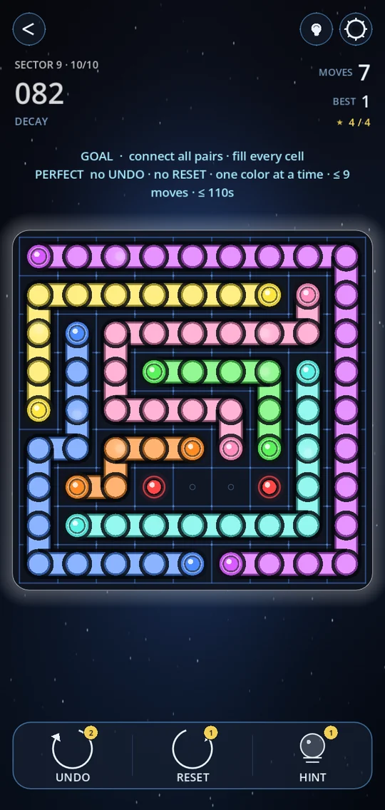
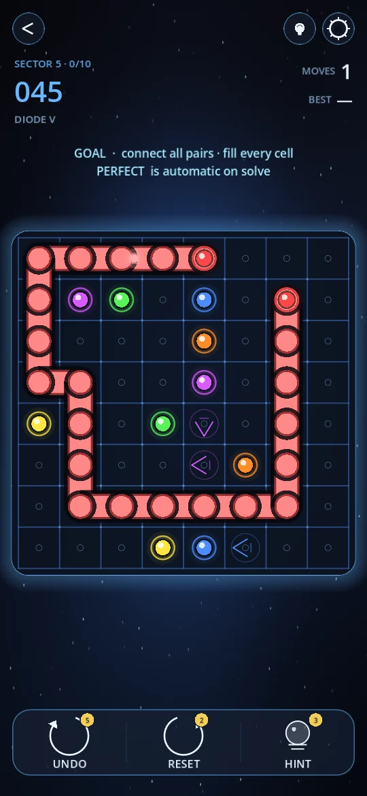

Flow puzzles look simple: a grid, some coloured dots, one rule. Connect each pair of matching dots with a line, and don't let the lines cross. Then you hit a level where every colour seems to block another, and simple stops being the word.
The good news is that a well-made flow puzzle never needs luck. There is always a reason for the next move. These are the strategies we use ourselves, roughly in the order a puzzle asks for them. We also built them into the solver that rates every level in Circuit Trace, so they're the same steps the difficulty is measured in.



The rules in one line
Connect every pair of same-coloured dots with a path that moves up, down, left or right. Paths can't cross or share a cell. In most puzzles, including the harder levels of Circuit Trace, every cell on the board also has to be filled.
That last rule is what makes flow puzzles solvable by logic. If every cell must be used, an empty pocket that no line can reach means you've gone wrong somewhere.
1. Start with the edges and corners
A cell in a corner has only two neighbours. A dot in a corner therefore has at most two ways to go, and often only one. Lines that run along the edge of the board are also rarely wrong, because they leave the middle open for everyone else. When you don't know where to begin, begin at the border.
2. Make the forced moves
Look for a line end with only one free neighbour. It has to go there. Draw that step, then look again: making one forced move often creates the next. A large part of every easy and medium puzzle is solved this way, one obvious step at a time.
3. Never leave a dead end
An empty cell with only one open neighbour is a dead end. On a fill-every-cell board, only a dot can sit at the end of a line, so a dead end without a dot is a mistake. If a move would create one, that move is wrong. This one rule rules out more bad moves than any other.
💡 Check the corners you just made. Every time you bend a line, look at the cell inside the bend. If it now has only one way in, something else has to fill it.
4. Lines don't hug themselves
In a puzzle with one solution, a line almost never runs right alongside itself, doubling back like a hairpin. If it could, it could just as well take the shortcut, and the puzzle would have two answers. So when a route would make a line touch itself, try the other way first.
5. Find the bottlenecks
A gap that is one cell wide can only be used by one colour. Work out which colour needs it, and every other colour has to go around. Bottlenecks often split the board into separate rooms, and smaller rooms are easier to solve one at a time.
6. Route the long pair around the outside
When two dots of the same colour are far apart, their line usually travels along the edge rather than through the middle. A long line through the centre cuts the board in half and traps the other colours. Try the outside route first.
7. Close pairs are usually simple
Two dots right next to each other, or one step apart, almost always connect in the shortest way. Draw them early. It takes those cells off the board and tells you where the other lines can't go.
8. Try a move, and look for trouble
When nothing is forced any more, pick a line end with only two options. Try one in your head and follow the forced moves it creates. If that leads to a dead end or a colour that can't reach its partner, the other option is the right one. This is where the harder puzzles live, and it's what our solver counts as "thinking" when it rates a level.
9. Learn what the extras tell you
Many flow puzzle games add special cells. In Circuit Trace each one is also a clue:
- Diodes force a line to leave in the direction of the arrow, which often decides a whole route at once. See Diodes.
- Portals let a line jump across the board, and every portal in that pack is part of a route. See Portals.
- Walls block the step between two cells, and they usually sit exactly where the obvious route would go. See Labyrinth.
- A cube has no edges at all, so strategy 1 disappears and you have to lean on the others. See 3D Cube.
Practise at your own pace
The best way to get better is to play puzzles that grow with you. Circuit Trace's Classic pack starts on 5×5 boards and ends on a 10×10 grid, with no extra rules at all. Endless mode generates a fresh puzzle at any of seven difficulty levels, and the Daily Challenge gives everyone the same board each day.
Play Circuit Trace free on Google Play: 700+ flow puzzles, from your first connect-the-dots board to a cube.
Frequently asked questions
Can every flow puzzle be solved without guessing?
A well-made puzzle with one solution can always be solved by logic. On the hardest levels that logic includes trying a move in your head and ruling it out when it leads to a dead end.
What is the best first move in a flow puzzle?
Start with dots in corners and along the edges, and with any line end that has only one free neighbour. Those moves are almost never wrong.
Do you have to fill every cell?
In many flow puzzles, yes. In Circuit Trace the early levels only ask you to connect the pairs, and filling every cell earns the third star. Later levels require a full board.